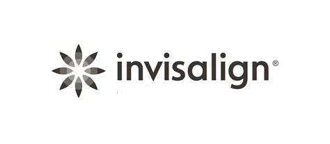
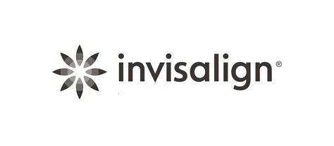

Aligntech
Align Technology is a global medical device company that is changing lives through better smiles. They reimagine and reinvent the way orthodontic and restorative treatment is presented and delivered to millions of people around the world.
What did the company want to achieve
The company wanted to connect customers on the Line chat platform directly to their Twilio Flex Contact center. For new customers they wanted to include an onboarding chat flow and for their existing customers chat was directly transferred to the agent.
How did we help them
We helped them build a call flow using Twilio studio with error checks. We built tight integrations with the customer's CRM platform.